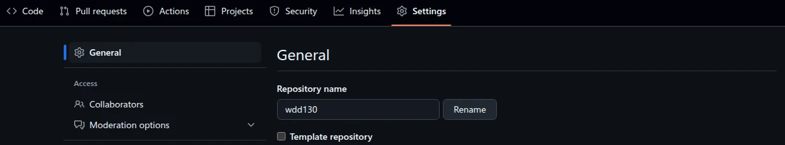
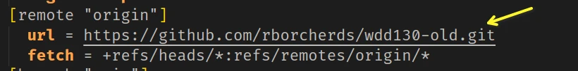

Retaking WDD130 at BYU-Idaho
If you are retaking WDD130, please follow these instructions to set up your computer:
-
Go into GitHub and rename your repository to include "wdd130" and add something descriptive like old or previous such as "wdd130-old". This image shows the entry box and it is found in the repository settings tab / General menu at the top.
Once you have typed the new name, click "Rename" button.
-
Rename the folder on your local computer from wdd130 to match what you renamed the repository to. How you do this will depend on your operating system.
-
You must delete the hidden folder called .git or you must edit the .git/config file in the renamed folder to point to the new repository URL.
This process will allow you to keep the old code in sync with GitHub.
Now continue with the rest of the setup instructions found at https://byui-cse.github.io/wdd130-ww-course/week01/setup-github.html#create-repo Step 2. This link will take you directly to Step 2